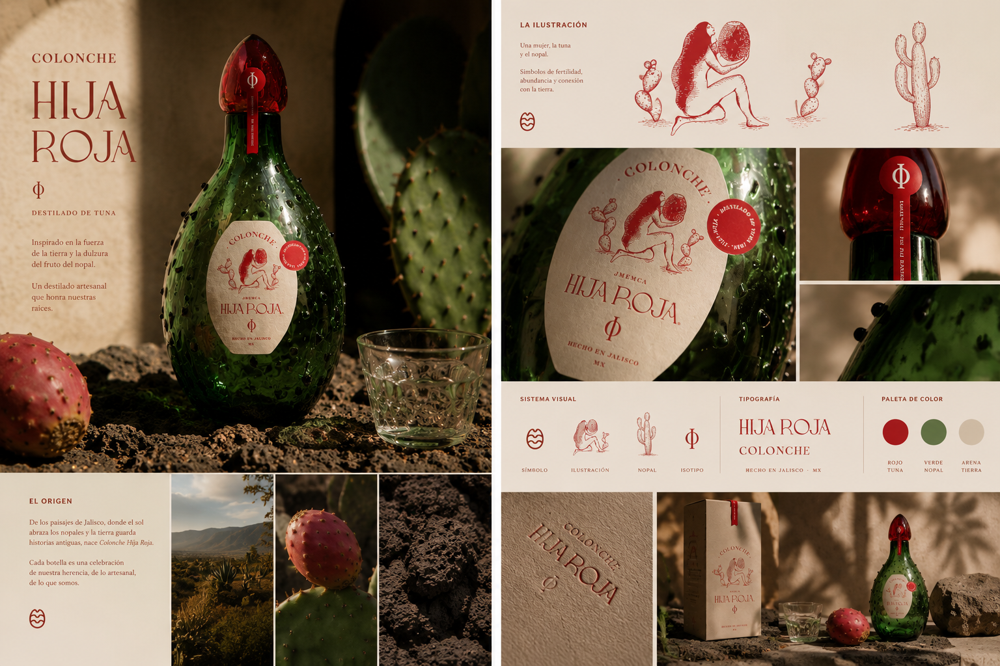
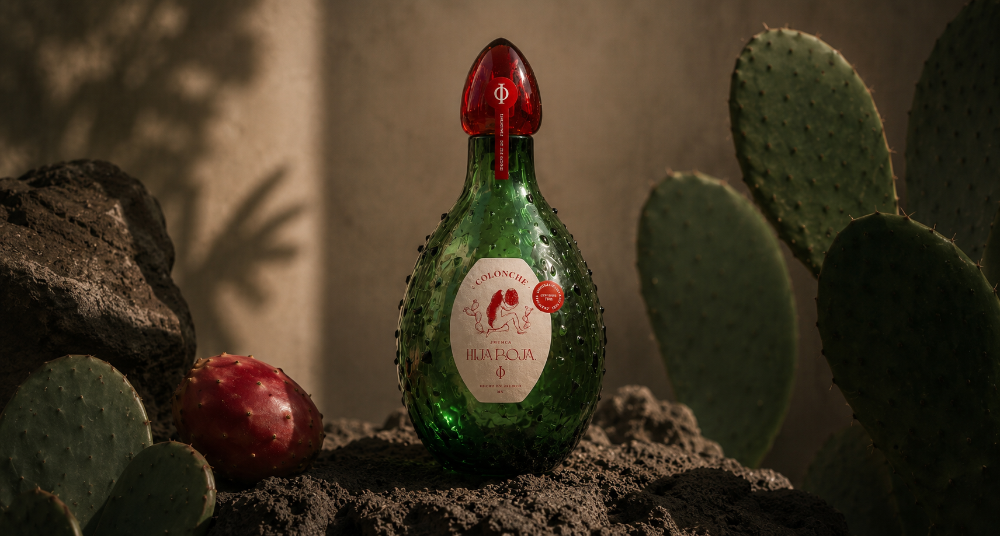
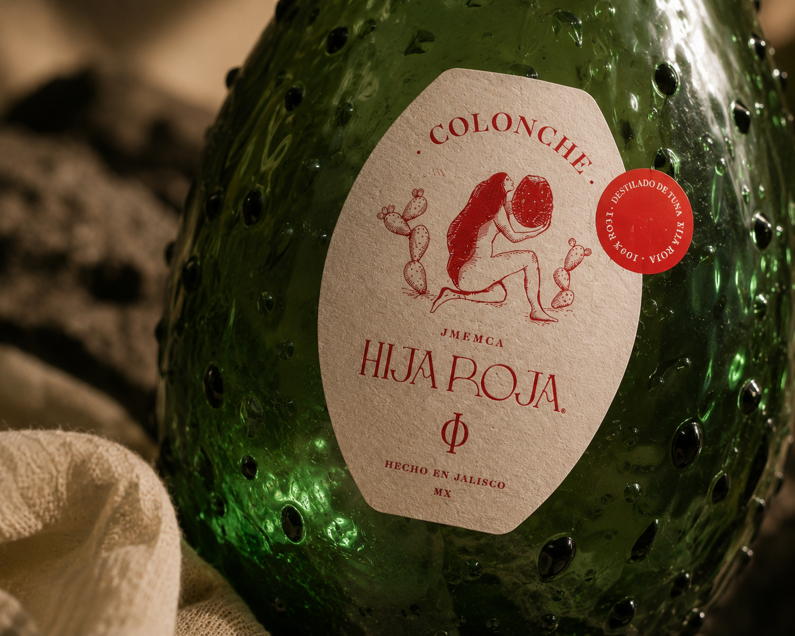
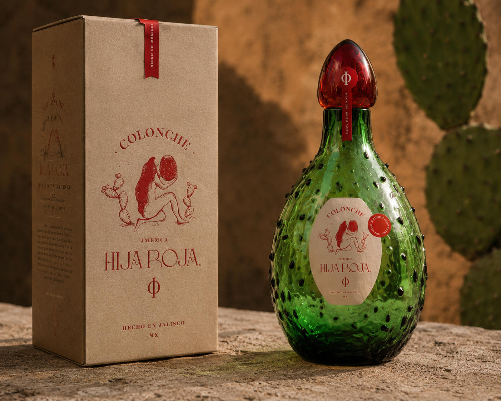

<title>María Méndez — Hija Roja</title>
<meta name="viewport" content="width=device-width, initial-scale=1.0">
<link rel="icon" type="image/png" href="assets/favicon.png">

<link rel="stylesheet" href="styles/variables.css">
<link rel="stylesheet" href="styles/base.css">
<link rel="stylesheet" href="styles/components.css">
<link rel="stylesheet" href="styles/page-project.css">

<!-- ─── NAV ─────────────────────────────────────────────────── -->
<nav class="comp-nav page-project--branding">
  <a class="comp-nav__logo" href="work.html">Maria Mendez</a>
  <ul class="comp-nav__links">
    <li class="is-active"><a href="work.html">Work</a></li>
    <li><a href="about.html">About</a></li>
    <li data-placeholder>Shop</li>
    <li><a href="contact.html">Contact</a></li>
  </ul>
  <div class="comp-nav__dot"></div>
</nav>

<!-- ─── PAGE ─────────────────────────────────────────────────── -->
<main class="page-project page-project--branding">

  <!-- PROJECT HEADER -->
  <header class="project-header">

    <div class="project-header__left">
      <p class="project-category">Branding · 2022</p>
      <h1 class="project-title">Hija<br>Roja</h1>
      <div class="comp-spec-sheet">
        <div class="spec-item">
          <div class="spec-label">Client</div>
          <div class="spec-value">Hija Roja</div>
        </div>
        <div class="spec-item">
          <div class="spec-label">Discipline</div>
          <div class="spec-value">Brand Identity, Packaging &amp; Campaign</div>
        </div>
        <div class="spec-item">
          <div class="spec-label">Year</div>
          <div class="spec-value">2022</div>
        </div>
      </div>
      <button type="button" class="cta-link gallery-view-all js-view-gallery">Ver toda la galería →</button>
      <p class="gallery-note">Arrastra las imágenes para moverlas · Doble clic para ver en galería</p>
    </div>

    <div class="project-header__right">
      <p class="project-desc">Hija Roja es un licor elaborado a partir de tuna, nacido de la tierra donde se cultiva. El proyecto parte de la idea de extraer la esencia de ese paisaje y convertirla en una figura: una diosa contemporánea, femenina y poderosa, ligada a la fertilidad, la agricultura y los ciclos de crecimiento. A partir de este concepto se desarrolló la identidad completa de la marca, incluyendo branding, diseño de botella y etiquetas, ilustraciones y campaña de lanzamiento.</p>
      <p class="project-desc project-desc--secondary">La identidad se mueve entre lo ancestral y lo contemporáneo, tomando símbolos de la tierra y transformándolos en un universo visual más libre, sensual y avant-garde. Una marca que no busca representar la tradición literalmente, sino reinterpretarla desde una perspectiva más desenfadada y actual.</p>
    </div>

  </header>

  <!-- GALLERY — Layout B only -->
  <section class="comp-gallery-interactive"
    data-gallery-cover="assets/projects/hija-roja/hija-roja-cover.png"
    data-gallery-extra='[
      {"src":"assets/projects/hija-roja/hija-roja-07.png"},
      {"src":"assets/projects/hija-roja/hija-roja-08.png"},
      {"src":"assets/projects/hija-roja/hija-roja-09.png"}
    ]'>

    <div class="comp-drag-hint" id="dragHint">Move to Explore →</div>

    <div class="gallery-canvas" id="galleryCanvas">

      <div class="gallery-piece gp-1" data-rotation="-8">
        
      </div>

      <div class="gallery-piece gp-2" data-rotation="6">
        
      </div>

      <div class="gallery-piece gp-3" data-rotation="-4">
        
      </div>

      <div class="gallery-piece gp-4" data-rotation="9">
        
      </div>

      <div class="gallery-piece gp-5" data-rotation="-6">
        
      </div>

      <div class="gallery-piece gp-6" data-rotation="3">
        
      </div>

    </div>
  </section>

</main>

<script src="scripts/gallery.js"></script>
